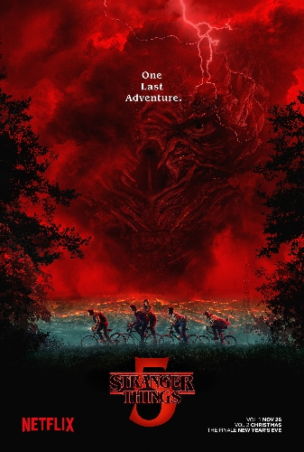

A serie lançada em 2016, conta atualmente com 5 temporadas!
1° TEMPORADA
Gira em torno do desaparecimento do garoto Will Byers em 1983 na cidade de Hawkins, Indiana.
A busca por ele une os esforços de sua mãe, Joyce, e do chefe de polícia, Jim Hopper
enquanto seus amigos, Mike, Dustin e Lucas, encontram uma garota misteriosa com poderes psicocinéticos, a
Onze.
Juntos, eles descobrem um mundo alternativo, o "Mundo Invertido", e enfrentam experimentos secretos do
governo e uma criatura monstruosa.
2° TEMPORADA
Will Byers sendo alvo de uma grande criatura tentaculada chamada "Devorador de Mentes", que o possui e
controla outras criaturas.
Os amigos de Will, com a ajuda da recém-chegada Max Mayfield e da Onze, precisam unir forças novamente para
combater as ameaças do Mundo Invertido
que invadem Hawkins.
3° TEMPORADA
Em julho de 1985, as crianças precisam lidar com os dilemas da adolescência, como romances e amizades.
Um dos novos pontos da cidade é o shopping Starcourt Mall, que começa a atrair atenção dos moradores de
Hawkins,
causando o fechamento de várias outras lojas.
4° TEMPORADA
Em Hawkins, Mike e Dustin se juntaram ao "Clube Hellfire" de sua escola secundária.
um clube de Dungeons & Dragons liderado pelo excêntrico Eddie Munson. Como resultado, eles perdem a vitória
de Lucas no campeonato de basquete.
Max, que terminou seu relacionamento com Lucas, luta para lidar com a morte de Billy.
5° TEMPORADA:

Na última temporada de Stranger Things, Hawkins encara o caos após a abertura do portal do Mundo Invertido.
Onze e seus amigos se unem para enfrentar Vecna em uma batalha final que decidirá o destino da cidade — e do
mundo.